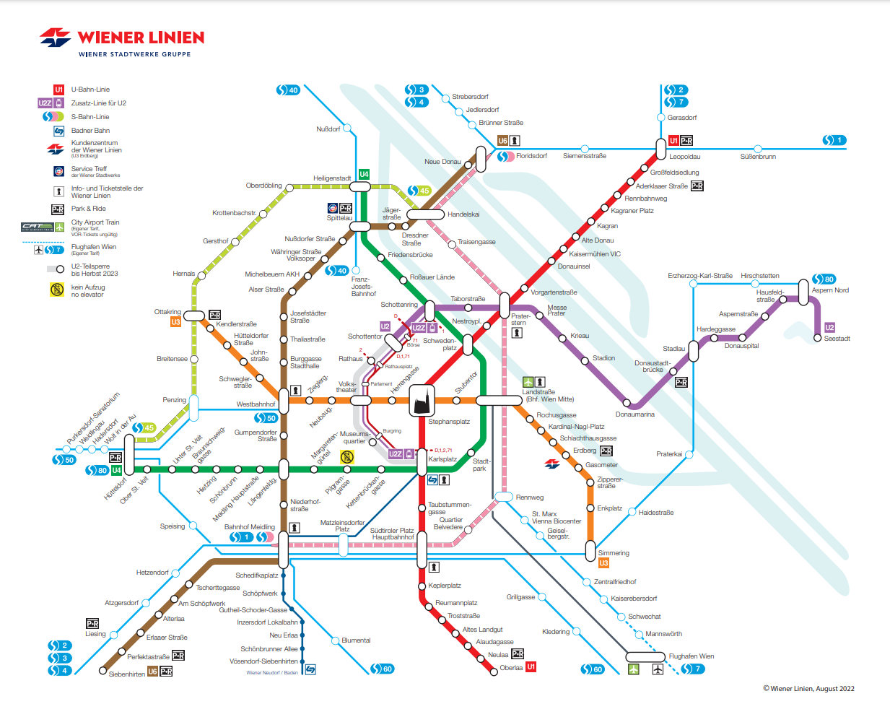
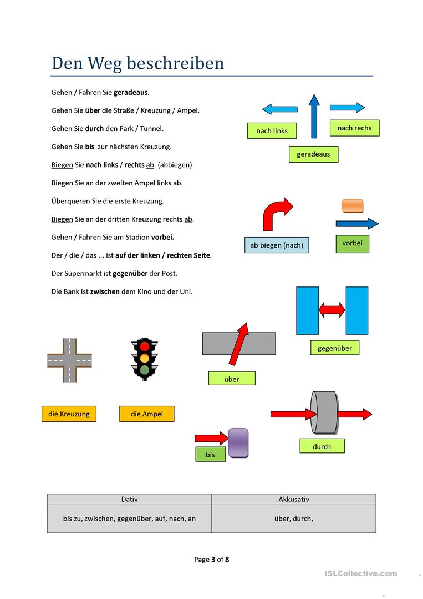

Alkalmi sich-es igék
-
sichA beeilen = seit
Ich beeile mich. -
vorstellen = bemutat
sichA vorstellen = bemutatkozik
sichD vorstellen = elképzel
- Ich stelle Ihnen Herrn Kovács vor.
- Ich stelle mich vor.
- Ich kann mir die Zukunft noch nicht vorstellen.

Wegbeschreibung
- Entschuldigung! Können Sie mir helfen?
- Wie komme ich zum Bahnhof?
- Wo finde ich den Bahnhof?
- Wie komme ich dorthin?
- Gehen Sie zu Fuß!
- Fahren Sie mit dem Bus/mit der Straßenbahn/mit der U-Bahn!
- Nehmen Sie den Bus Linie 20!
- Nehmen Sie die Straßenbahn Linie 1(eins)!
- Haltestelle, U-Bahn
- Gehen Sie geradeaus!
- Gehen Sie (nach) rechts!
- Gehen Sie (nach) links!
- Gehen Sie die erste Straße links!
- Gehen Sie die erste Straße rechts!
- Überqueren Sie die Straße!
- Gehen Sie über die Brücke!
- Gehen Sie durch den Tunnel!
- Gehen Sie durch den Wald!
- Gehen Sie durch den Park!
- bei Rot
- bei Grün
- die Ampel
- e Haltestelle, -n
- e Station, -en
- r Fahrschein
- e Fahrkarte
- e Monatskarte
- Nehmen Sie den Bus Linie 20 und fahren Sie damit 2 Haltestellen.
- Nehmen Sie die U6 und fahren Sie damit 2 Stationen!
- ein|steigen in+A
- um|steigen in+a
- aus|steigen aus+D
- Danke für die Auskunft.
- ein|biegen
- an der Ecke
- un die Ecke
- an der Haltestelle
Ausgangspunkt: Karlsplatz
Ziel: Volkstheater
- Entschuldigung! Können Sie mir helfen? Wie komme ich das Volkstheater? Wo finde ich das Volkstheater?
- Es ist sehr einfach. Fahren Sie mit der U2, Richtung Seestadt. Fahren Sie damit 2 Stationen! Dort finden Sie das VT.
Ziel: Westbahnhof
- Nehmen Sie die U1(eins), Richtung Leopoldau. Fahren Sie damit eine Station, bis zum Karlsplatz. Steigen Sie in die U3 um, Richtung Ottakring. Fahren Sie noch 5 Stationen. Dort finden Sie den Westbahnhof.
Ziel: Stadtpark
- Nehmen Sie die U4, Richtung Heilingenstadt. Fahren Sie damit eine Station
.jpg)

Tagesablauf
Ich stehe jeden Tag um 6 Uhr auf. Ich ziehe mich an, frühstücke, dann putze mir die Zähne. Um halb 7 fahre ich mit dem Bus in die Schule. Der Unterricht beginnt um Viertel vor 8. Ich habe im Allgemeinen 7 Stunden: Mathe, Liberatur, Tremdsprachen, Sport, Geschichte, Biologie und Physik. Ich esse entweder in der Schule oder in der Mensa zu Mittag. Um halb 3 fahre ich nach Hause. Zu Hause mache ich die Hausaufgaben und lerne 1-2 Stunden. Am Abend isst die Familie zusammen, im Allgemeinen etwas Warmes. Um 20 Uhr dusche ich mich, dann sehe ich fern oder höre Musik. Um 22 Uhr gehe ich schlafen.